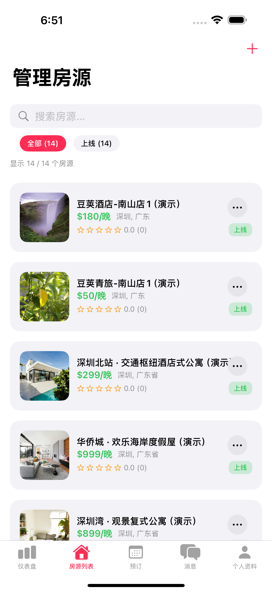
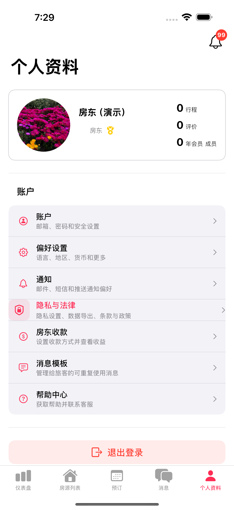

Peapod 用户手册 - 房东指南
版本： 0.18.8（Slice V - 多单元支持） 最后更新： 2025年11月30日 平台： iOS（iPhone、iPad）
← 返回目录
👥 关于本手册：
本手册涵盖房东（房源所有者）和联合房东（管理日常运营的团队成员）。
联合房东角色（中国版1.0已启用）： 联合房东已全面启用，负责大部分房源管理职责，包括房客沟通、预订管理、日历更新、房源维护和协调清洁。他们可以访问所有运营功能以确保日常运营顺畅。
联合房东权限： - ✅ 编辑房源（描述、照片、设施、规则） - ✅ 为指定房源与房客沟通 - ✅ 更新日历和可用性 - ✅ 查看和管理预订 - ✅ 与保洁员协调 - ✅ 报告问题
联合房东限制： 联合房东不能更改价格、访问收款/财务信息、邀请其他团队成员或删除房源。这些仍然是房东专属功能。
目录
- 5.1 导航 - 仪表板、房源、预订、消息、个人资料标签
- 5.2 创建与编辑房源 - 房源基础、位置、价格、照片、可用性、设施、规则 + 编辑功能 + 新功能：酒店/青旅房型/床型（5.2.13）
- 5.3 房源审核与批准流程 - 审核员审核、批准状态
- 5.4 处理预订请求 - 接受/拒绝、即时预订、修改
- 5.5 团队管理 - 邀请联合房东/保洁员、管理角色、权限
- 5.6 房客沟通与评价 - 消息模板 + 评价与评分
- 5.7 收入与忠诚度 - 收入、提款、税务信息 + 忠诚度等级与奖励
- 5.8 房东资源
附录
5. 房东与联合房东
语言设置: 首次在中国区使用时默认显示简体中文，用户可在登录页面右上角切换至 English 界面。
5.1 导航
房东界面使用5标签底部导航栏。每个标签提供关键房东功能的访问。
5.1.1 仪表板标签
一目了然的绩效概览。监控收入、预订和入住率趋势。
关键指标（顶部卡片）： - 已收款项 - 已转入您银行账户的总金额（已完成） - 待收入 - 房客入住后等待收款的金额（绿色 = 等待收款） - 本月总预订 - 已确认预订数量 - 本月当前入住率 - 已预订晚数百分比
收入概览图表： - 按月显示收入的柱状图 - 查看最近6个月收入 - Y轴显示美元金额（$0k-$4k范围） - 悬停/点击柱状图查看精确金额
入住率部分： - 本月 - 当月入住率百分比（红色指示器） - 下月 - 下月入住率百分比（灰色指示器） - 点击”查看日历”查看详细可用性

5.1.2 房源标签
在一个屏幕上管理所有房源。创建新房源、编辑现有房源并监控状态。
搜索与筛选： - 搜索栏：“搜索房源…” - 按名称查找房源 - 筛选标签： - 全部 (14) - 所有房源，无论状态 - 活跃 (13) - 房客可见的上线房源 - 您暂停的 (1) - 您临时禁用的房源 - 计数器显示每个类别的房源总数 - 标签下方文字：“显示Y个房源中的X个”
房源卡片显示： - 房源照片缩略图（左侧） - 房源标题（粗体，大字） - 每晚价格（绿色，如”$300/晚”） - 位置（城市、州，灰色） - 星级评分和评价数（如”5.0 (4)“） - 状态徽章（右侧）： - 绿色”活跃” - 上线且可预订 - 蓝色”您暂停的” - 临时禁用 - 三点菜单（⋯）- 快速操作：编辑、团队成员、管理任务、激活、删除
创建新房源： - 点击”+“按钮（右上角）开始房源创建流程

5.1.3 预订标签
查看和管理所有房源的预订。追踪入住、收款和房客信息。
搜索与筛选： - 搜索栏：“搜索预订…” - 按房客姓名、房源或确认号查找 - 筛选标签： - 待处理 - 等待您批准（如非即时预订） - 即将到来 - 未来已确认预订 - 今天 - 今天入住或退房的预订 - 全部 - 完整预订历史
预订卡片显示： - 房源照片缩略图（左侧） - 房源名称（粗体） - 房客姓名（灰色文字，如”房客：John Peapod”） - 状态徽章（绿色”已确认”、黄色”待处理”等） - 入住日期和退房日期 - 房客数量 - 收款金额（绿色，如”$661”） - 确认号（预订ID） - 三点菜单（⋯）- 操作（查看详情、联系房客、修改、取消）
刷新： - 点击刷新图标（右上角）更新预订状态

5.1.4 消息标签
与房客沟通预订事宜。按房源和预订日期组织查看所有对话。
搜索： - 搜索栏：“搜索消息” - 按房客姓名或房源查找对话
对话列表： - 房客头像（左侧，圆形） - 房源名称（粗体，如”Mission Bay海滨公寓”） - 预订日期（灰色，如”(10月14-16日)“） - 最后消息预览（灰色，截断） - 时间戳（右侧，如”1小时前”、“2天前”） - 未读指示器（如有未读则显示数量徽章）
撰写新消息： - 点击铅笔图标（右上角）开始新对话
消息组织： - 最近对话在顶部 - 按房源分组 - 显示预订上下文便于参考

5.1.5 个人资料标签
您的账户设置、偏好和收款配置。在房东和房客角色之间切换。
个人资料头部： - 头像（圆形，点击更改） - 姓名（如”Jennifer Host”） - 角色徽章（如”房东 👑“带皇冠图标） - 切换角色按钮（蓝色）- 在房东和房客视图之间切换 - 统计显示： - 行程 - 作为房客的总预订 - 评价 - 收到的评价数 - 会员年数 - 账户年龄
账户设置： - 账户 - 邮箱、密码和安全设置 - 偏好设置 - 语言、地区、货币等 - 通知 - 邮件、短信和推送通知偏好 - 隐私与法律 - 隐私设置、数据导出、条款与政策 - 房东收款 - 设置收款和查看收入 - 帮助中心 - 获取帮助和联系客服
退出登录： - 底部红色”退出登录”按钮
通知： - 铃铛图标（右上角）- 查看通知历史

5.2 创建与编辑房源
房源编辑器使用8格导航网格，您可以按任意顺序跳转各部分。每个完成的部分显示绿色勾号。随时点击右上角”预览”预览您的房源。
创建新房源 [仅限房东]： 1. 房源标签 → “+”按钮 → 打开编辑器 2. 完成全部8个部分（房源基础、位置、价格、照片、可用性、设施、预订规则、房屋规则） 3. 进度仅自动保存到您的设备（不在服务器上） 4. 预览 → “提交审核”发送给审核员批准
编辑现有房源： 1. 房源标签 → 点击房源 → 三点菜单（⋯）→ “编辑房源” 2. 相同的8格编辑器，预填数据 3. 修改 → 预览 → 保存 4. 更改自动分类（详见5.3.3节）： - 关键（卧室、浴室、最大房客数、房源类型、主要设施）→ 上线前需审核员批准 - 自动批准（照片、价格、描述、入住说明等）→ 立即上线，无需审核
创建前准备： - 您拥有或有权出租该房源 - 房源符合当地法规和安全要求 - 您有房源的高质量照片 - 您可以向房客提供入住说明
5.2.1 房源基础
本部分涵盖向潜在房客描述您房源的基本详情。
房源标题（建议40-100字符） - 创建描述性、可搜索的标题，突出房源最佳特色 - 字段下方显示字符计数器（40/100） - 示例：“La Jolla Cove附近的海滨公寓”、“带城市景观的舒适市中心工作室” - 提示：包含位置、房源类型和主要设施
房源类型 - 点击下拉菜单选择可用类型： - 单单元类型（预订整个房源）： - 独栋房屋 - 带私人入口的整栋房屋 - 公寓 - 整套公寓 - 客房 - 住宅内的私人房间 - 多单元类型（预订房型/床型）： - 酒店 - 酒店或汽车旅馆房间（见5.2.13 管理房型） - 青旅 - 青旅床位或共享住宿（见5.2.13 管理床型） - 精品酒店 - 精品或小型酒店（见5.2.13 管理房型） - 度假村 - 带多种房型的度假村（见5.2.13 管理房型） - 这帮助房客按房源类型筛选搜索结果 - 每种类型在选择器中显示唯一图标 - 注意： 酒店、青旅、精品酒店和度假村在发布前需要至少一个房型/床型
描述（91-1000字符） - 撰写房源的详细描述 - 字段下方显示字符计数器（91/1000） - 描述空间、设施、社区和独特之处 - 使用清晰段落提高可读性 - 绿色计数器表示长度足够（91+字符）
最大房客数 - 使用 +/- 按钮设置容量（1-20位房客） - 计数器显示当前数量 - 考虑睡眠安排和公共区域空间 - 影响搜索可见性和定价
房间和床位 - 卧室： 私人卧室数量（0-10） - 工作室公寓选择0（“任意”） - 浴室： 浴室数量，以0.5为增量（0.5-10.0） - 0.5 = 半浴室（马桶+水槽，无淋浴） - 1.0 = 全浴室（马桶+水槽+淋浴/浴缸） - 床位： 总床位数（1-20） - 计算房客可以使用的所有睡眠表面

5.2.2 位置
输入您房源的地址和社区信息。地址验证确保地图显示的坐标准确。
地址 - 街道地址（必填） - 公寓、套房等（可选）- 添加单元号或建筑详情 - 城市、州、邮编（必填） - 所有字段通过地址验证自动填充
验证地址按钮 - 点击”验证地址”确认位置 - 系统根据地图服务检查地址 - 成功：绿色勾号”✓ 地址已验证（坐标已设置）” - 如验证失败：检查并更正地址组件 - 坐标（经纬度）自动设置用于地图显示
社区（必填） - 描述社区、附近景点和交通 - 帮助房客了解该地区的特色 - 提及到热门目的地的步行距离 - 如相关，包含停车可用性 - 此字段显示在您的房源页面上

5.2.3 价格
设置每晚房价和可选费用。价格以美元为单位，向房客显示透明明细。
每晚基础价格（必填） - 费用前的每晚房价 - 输入美元金额（如200） - 这是您每晚的收入（减去平台费） - 房源创建后可通过日历按季节调整
清洁费（可选） - 每次预订收取的一次性费用（非每晚） - 涵盖深度清洁、洗涤、补充 - 输入美元金额（如50） - 建议：根据房源大小$50-150 - 在房客价格明细中单独显示
房客支付： - 基础价格（每晚价格 × 晚数） - + 清洁费 - + 任何适用税费
您收到： - 基础价格 × 晚数 - + 清洁费 - - 平台费（15% - 等级百分比）

5.2.4 照片
上传房源的高质量图片。照片是预订决策的首要因素。
添加房源照片 - 点击”添加更多”从设备选择照片 - 每张照片上传时显示”新”徽章 - 最少：5张照片（建议：10-20张） - 最大文件大小：每张10MB - 支持格式：JPG、PNG
照片提示： - 使用自然光（打开窗帘，白天拍摄） - 展示房客可以使用的所有房间 - 包括浴室、厨房、睡眠区域 - 捕捉独特功能和设施 - 从角落拍照展示完整房间 - 第一张照片是封面 - 要精心选择！
重新排序照片： - 拖动照片重新排序 - 第一张照片显示在搜索结果中 - 按顺序排列其余照片讲述故事（入口 → 起居区 → 卧室 → 户外空间）
添加视频（可选） - 粘贴YouTube或其他视频URL或ID - 视频为房客提供虚拟导览 - 展示房源布局和氛围 - 每个房源最多1个视频

5.2.5 可用性
在创建房源时设置屏蔽日期。高级日历功能（自定义定价、周期规则）在创建房源后可用。
屏蔽日期 - “选择您房源不可用的日期” - 注意：“日历功能将在创建房源后可用”
房源创建后： - 带日期选择器的完整日历 - 屏蔽特定日期或日期范围 - 设置节假日/旺季的自定义定价 - 配置最短/最长入住要求 - 设置提前预订窗口 - 添加周期可用性规则

5.2.6 设施与无障碍
选择您房源提供的所有设施和无障碍功能。准确选择可提高搜索匹配度，帮助房客找到满足其需求的房源。
您提供什么设施？
已选设施显示粉色背景和红色勾号： - WiFi - 厨房 - 洗衣机 - 烘干机 - 电视 - 阳台 - 花园 - 停车位
未选设施显示灰色背景： - 空调 - 暖气 - 泳池 - 热水浴缸 - 健身房 - 壁炉 - 洗碗机 - 洗衣房 - 熨斗
无障碍功能
选择所有适用的无障碍功能，使您的房源更方便有行动、听力或视力需求的房客：
可用选项： - 无台阶入口 - 主入口无楼梯 - 宽门 - 32英寸以上，轮椅可通过 - 无障碍浴室 - 滚入式淋浴或无障碍浴缸 - 扶手 - 浴室和其他区域 - 电梯 - 建筑有电梯 - 轮椅无障碍 - 全程轮椅可通行 - 听力无障碍 - 视觉警报、门铃指示器 - 视觉辅助 - 盲文、高对比度标识 - 允许服务动物 - 欢迎服务动物
注意： 设施和无障碍选项从数据库加载 - 随着新选项添加到平台，列表会自动更新。


5.2.7 预订规则
配置取消政策、即时预订设置和最短入住要求。
最短入住晚数 - 设置最短预订长度（默认：3晚） - 使用 +/- 按钮调整（1-30晚） - 较长的最短入住减少周转但可能限制预订 - 房源创建后可按日期范围调整
取消政策 - 点击下拉菜单选择政策（示例显示”灵活”） - 灵活： 入住前24小时全额退款，之后50% - 中等： 入住前5天全额退款，2-5天50%退款，2天内不退款 - 严格： 入住前14天全额退款，7-14天50%退款，7天内不退款 - 政策在预订前向房客显示
重要退款规则： - 清洁费和税费： 如果房客在入住前取消，始终100%退款（无需清洁，不适用税费） - 基础价格（住宿费）： 根据取消政策百分比（基于时间100%/50%/0%） - 服务费： 灵活/中等政策可退，严格政策不可退
示例（中等政策，房客入住前3天取消）： - 基础价格$200 → 50% = $100退款 - 清洁费$50 → 100% = $50退款 ✅ - 税费$20 → 100% = $20退款 ✅ - 服务费$28 → 100% = $28退款（中等允许） - 总退款：$198（房客支付$298）
预订偏好
即时预订（开关） - 启用时：房客可以不经房东批准直接预订 - 支付自动授权 - 更快预订，更少手动工作 - 默认：关闭（示例显示为开启）
允许即时预订的条件：（要求满足所有选定条件） - 所有人 - 无限制（不推荐） - 已验证房客 - 政府证件已上传并验证 - 回头客 - 之前在平台预订过 - 好评房客（>4.5） - 要求高房客评分
自助入住（开关） - 启用时：房客可以不与您见面自行入住 - 需要下方详细的入住说明
自助入住说明（如启用自助入住则必填） - 提供逐步入住说明 - 包括密码箱位置和密码、钥匙位置或智能锁说明 - 示例：“密码将在入住日期前发送” - 说明在到达前24小时自动发送给房客

5.2.8 房屋规则
设置入住/退房时间和房源规则以设定房客期望。
入住时间 / 退房时间 - 默认：入住下午2:00，退房上午11:00 - 点击时间使用时间选择器更改 - 允许房客之间的清洁缓冲时间 - 在预订确认中向房客显示
房屋规则
切换每条规则开/关： - 允许吸烟 - 关闭以禁止室内吸烟 - 允许宠物 - 关闭以禁止宠物 - 允许派对/活动 - 关闭以禁止聚会 - 默认：全部关闭（禁止）
安静时间（开关） - 启用以强制安静时段 - 开始时间： 安静时间开始（默认：晚上11:00） - 结束时间： 安静时间结束（默认：早上8:00） - 显示在房源页面的房屋规则中

5.2.9 编辑价格与智能定价
创建房源后，更新定价并访问智能定价功能。
基本价格更新： 更新每晚房价和清洁费（字段详情见5.2.3节）
智能定价与折扣： 点击”管理智能定价”按钮访问：
时长折扣： 鼓励长住 - 7+晚：10%折扣（用垃圾桶图标编辑/删除） - 30+晚：20%折扣 - 用+按钮添加自定义时长层级
临时优惠： 铂金/钻石忠诚会员专属 - 创建当日优惠 - 设置折扣百分比和可用性
季节性与动态定价： 为特定日期/范围添加价格调整（节假日、旺季）


5.2.10 编辑可用性
完整的日历管理，包括日期屏蔽、导入/导出和周期规则。
屏蔽日期： 点击日期 → “屏蔽”按钮 → 可选添加原因（内部备注）
取消屏蔽日期： 点击已屏蔽日期（粉色/红色）→ “取消屏蔽”按钮
操作按钮： - 导入日历： 与外部日历同步（Airbnb、VRBO） - 周期规则： 设置自动屏蔽模式 - 导出日历： 与其他平台共享可用性

5.2.11 编辑照片与视频
管理房源照片和视频导览。
照片： 点击X删除，拖动重新排序（第一张=封面），点击”添加更多”上传新照片（每张最大10MB）
视频： 粘贴YouTube URL → 视频显示在轮播首位，带播放按钮和徽章。可提高30%+预订转化率。

5.2.12 预览与提交
预览： 点击”预览”（右上角）在提交前查看房客视图
保存行为： - 创建新房源： 更改仅自动保存到您的设备（不在服务器上）。准备好后点击”提交审核”发送给审核员。 - 编辑活跃房源： 更改自动分类： - 关键更改（卧室、浴室、容量、房源类型、主要设施）：保存但在审核员批准前对房客不可见（24小时审核） - 自动批准更改（照片、标题、描述、价格、WiFi密码、入住说明、日历）：立即生效，无需审核
详见5.3.3节了解两级审核系统的完整详情。
5.2.13 管理房型（仅限酒店/青旅/精品酒店/度假村）
新功能（Slice V）： 酒店、青旅、精品酒店和度假村可以定义多个房型或床型，每个都有自己的定价、容量、设施和可用性。
术语： - 酒店/精品酒店/度假村 → “房型”（如标准房、豪华套房、海景别墅） - 青旅 → “床型”（如4床混合宿舍上铺、女生宿舍单床）
⚠️ 发布要求： 多单元房源类型（酒店、青旅、精品酒店、度假村）在至少有一个活跃房型/床型之前不能发布。如果您尝试在没有房型的情况下提交，会看到验证错误。
为什么房型/床型重要：
与房客预订整个房源的度假租赁不同，酒店和青旅： - 提供不同类型的多个单元 - 允许同一日期的多个预订 - 按房型/床型追踪容量 - 允许不同住宿有不同定价
访问房型/床型管理：
- 前往房源标签
- 点击您的酒店或青旅房源
- 滚动到“房型”（酒店）或“床型”（青旅）部分
- 点击“管理类型”打开管理界面
A. 创建房型/床型：
必填字段： - 类型名称 - 描述性名称（如”海景豪华大床房”） - 总单元数 - 您有多少个此房型/床型（如10间豪华房） - 每单元最大房客 - 每房间/床位最大入住人数（如每房间2位房客） - 每晚基础价格 - 此特定类型的每晚房价
可选字段： - 描述 - 此房型/床型的详细描述 - 设施 - 房型特定设施（WiFi、空调、独立卫浴等） - 照片 - 此房型/床型特定的照片
创建步骤： 1. 点击“+ 添加房型”（或”+ 添加床型”） 2. 输入类型名称 3. 设置可用总单元数 4. 设置每单元最大房客 5. 输入每晚基础价格 6. 添加描述和设施（可选） 7. 上传房型/床型特定照片（可选） 8. 点击“保存”
B. 编辑房型/床型：
- 点击房型/床型卡片
- 修改任何字段
- 点击“保存更改”
可编辑内容： - 类型名称 - 总单元数（增加容量） - 每单元最大房客 - 每晚价格 - 描述 - 设施 - 照片
注意： 如果有活跃预订，不能将总单元数减少到低于当前活跃预订数。
C. 可用性和容量：
容量如何运作： - 每个房型/床型有自己的容量（总单元数） - 多位房客可以在同一日期预订相同类型 - 系统自动追踪预订vs总单元数 - 数据库级别防止超额预订
示例：
豪华大床房：总共5个单元
- 预订1：房客A预订1间（12月1-3日）→ 剩余4间
- 预订2：房客B预订2间（12月1-3日）→ 剩余2间
- 预订3：房客C尝试预订3间（12月1-3日）→ 被阻止（仅2间可用）查看可用性： - 每个房型/床型显示所选日期的当前可用性 - 颜色指示器：绿色（可用）、黄色（有限）、红色（已满） - 点击”查看日历”查看详细可用性
D. 停用/删除房型/床型：
停用（临时）： 1. 点击房型/床型 2. 关闭“活跃”开关 3. 该类型不再接受新预订 4. 现有预订保持有效 5. 可随时重新激活
删除（永久）： 1. 点击房型/床型 2. 点击“删除”按钮 3. 确认删除 4. 注意： 如果有活跃预订则不能删除
E. 酒店/青旅最佳实践：
- 使用清晰名称 - “带阳台的豪华大床房”比”A房间”更好
- 添加房型特定照片 - 展示每种房型的独特功能
- 战略性定价 - 高端房间应反映其设施
- 监控可用性 - 旺季定期检查容量
- 保持描述更新 - 准确的设施列表减少房客投诉
常见房型示例（酒店）： - 标准双床房 - 豪华大床房 - 带客厅的套房 - 家庭房（2张大床） - 无障碍房
常见床型示例（青旅）： - 4床混合宿舍上铺 - 6床女生宿舍上铺 - 8床混合宿舍单床 - 私人单人间 - 私人双人间
F. 理解设施与搜索影响：
两种类型的设施：
| 设施类型 | 在哪里设置 | 适用于 | 示例 |
|---|---|---|---|
| 共享设施 | 房源编辑器 → 设施 | 所有房型/床型 | 泳池、健身房、餐厅、大堂WiFi |
| 房型设施 | 房型编辑器 | 仅特定房型 | 阳台、迷你吧、独立卫浴、室内保险箱 |
组合设施在搜索中如何工作：
当房客使用设施筛选搜索时，系统检查：
组合设施 = 共享设施 ∪ 房型设施示例： - 您酒店的共享设施： WiFi、泳池、健身房、餐厅 - 豪华房设施：阳台、迷你吧 - 标准房设施：（无）
豪华房组合 = WiFi、泳池、健身房、餐厅、阳台、迷你吧 标准房组合 = WiFi、泳池、健身房、餐厅
搜索影响： - 房客搜索”WiFi + 泳池” → 两种房型都匹配 ✅ - 房客搜索”WiFi + 阳台” → 仅豪华房匹配 ✅ - 房客搜索”厨房” → 都不匹配 ❌
重要： 如果房客筛选的设施仅在某些房型中存在，您的房源将仅显示那些匹配的房型作为选项。
设施最佳实践： 1. 将全房源范围的设施添加到共享设施（房源编辑器） 2. 将房型特定设施添加到每个房型 3. 不要重复 - 如果泳池是共享的，不要添加到每个房型 4. 要准确 - 房客期望您列出的内容
G. 房客如何在搜索中看到您的房源：
对于多单元房源，搜索结果显示： - 房源卡片每个房源一个条目 - “从$X/房间"**或**"从$X/床位” - 最便宜匹配房型 - 主房型名称 - 如”标准双床房” - 共享徽章 - 超级房东、即时预订等
什么决定主房型： 1. 必须匹配房客的所有筛选（价格、房客、床位、设施） 2. 必须在所选日期可用 3. 匹配类型中最便宜的显示
示例： 房客搜索：$100-$200，2位房客，WiFi
您的酒店有： - 标准房：$120，2位房客，WiFi ✅ 匹配 - 豪华套房：$180，4位房客，WiFi ✅ 匹配 - 行政套房：$350，4位房客，WiFi ❌ 超出价格筛选
结果： 您的房源显示为”从$120/房间 — 标准房”
H. 查看房型预订：
在预订标签中，酒店/青旅预订显示： - 房源名称 - 房型/床型名称（如”豪华大床房”） - 预订单元数（如”2间房”） - 房客姓名和日期 - 总收款
预订详情显示： - 房型及描述 - 预订的房间/床位数 - 每单元和总价明细 - 分配的单元号（如使用单独单元）
5.3 房源审核与批准流程 [仅限房东]
了解房源状态和编辑如何被审核有助于您有效管理房源。
5.3.1 房源状态
您房源的状态决定房客是否可以看到和预订。
| 状态 | 含义 | 房客可见？ | 可预订？ | 您的操作 |
|---|---|---|---|---|
| 待审核 | 新房源已提交，等待审核员批准 | ❌ 否 | ❌ 否 | 等待审核员审核（24-48小时） |
| 请求修改 | 审核员退回要求修改 | ❌ 否 | ❌ 否 | 进行请求的修改，然后立即重新提交 |
| 活跃 | 已批准并在平台上线 | ✅ 是 | ✅ 是 | 管理预订，可随时暂停 |
| 活跃（待审核编辑） | 活跃房源有关键编辑等待审核员批准 | ✅ 是（显示旧批准数据） | ✅ 是 | 等待审核员审核您的更改 |
| 您暂停的 | 您临时禁用了它 | ❌ 否 | ❌ 否 | 准备好时取消暂停（无需重新审核） |
| 审核员暂停的 | 审核员发现上线房源问题 | ❌ 否 | ❌ 否 | 修复问题，然后重新提交审核 |
| 已拒绝 | 审核员永久封锁此房源 | ❌ 否 | ❌ 否 | 修复问题并立即重新提交，或通过聊天申诉 |
| 已归档 | 您永久移除了它 | ❌ 否 | ❌ 否 | 无法恢复 |
重要说明：
无草稿状态： 您正在创建的房源仅自动保存在您的设备上。一旦提交，房源立即在我们系统中创建，状态为”待审核”。您不能将部分房源保存到服务器。
有待审核编辑的活跃房源： 当您编辑活跃房源的关键信息时（见下方5.3.3节），您的房源保持活跃和可预订。房客继续看到旧的审核员批准的信息，直到您的更改被审核和批准。这保护房客免受看到未验证的更改。
5.3.2 新房源提交工作流程
创建您的第一个房源：
开始创建： 在编辑器中开始填写房源详情
- 进度仅自动保存到您的设备
- 对审核员或房客还不可见
- 可以退出并返回继续编辑
提交审核： 完成后点击”提交审核”
- 房源在我们系统中创建
- 状态：待审核
- 进入审核员审核队列
- 您将收到通知（邮件+推送）
审核员审核（24-48小时）：
选项A：批准
- 状态变为活跃
- 房源立即上线
- 在搜索结果中可见
- 房客可以预订
选项B：请求修改
- 状态变为请求修改
- 您收到具体反馈：
- 照片质量差（太暗、模糊、不够）
- 描述不完整（太短、缺少细节）
- 设施缺失或不准确
- 定价似乎不正确
- 缺少必需文件
- 您的操作： 进行修改，然后立即重新提交
- 审核员在24小时内重新审核
选项C：拒绝
- 状态变为已拒绝
- 审核员发现根本问题：
- 欺诈（盗用照片、房源不存在）
- 非法活动或不安全结构
- 政策违规（歧视性语言、禁止用途）
- 重复（同一房源已上线）
- 不可用（房源已售/不可用）
- 错误平台（商业房源在住宅平台上）
- 您的操作： 修复问题并立即重新提交，或如认为有误通过聊天申诉
5.3.3 编辑活跃房源：两级审核系统
一旦您的房源活跃，编辑分为两类。这平衡了您的自主权和质量控制。
🔴 关键更改（需要审核员重新批准）
这些从根本上定义房客预订的内容。更改需要审核员批准后才能上线。
示例： - 房源类型（独栋房屋 → 公寓） - 卧室数量 - 浴室数量 - 最大房客容量 - 位置/地址 - 主要设施（泳池、热水浴缸、停车、空调/暖气、厨房、洗衣机/烘干机、无障碍功能）
发生什么： 1. 您进行更改并保存 2. 您的房源保持活跃和可预订 3. 房客看到： 旧的批准信息（如”2卧室”） 4. 您看到： “活跃 ⏳ 1个待审核编辑（关键）”及详情 5. 审核员在24小时内审核 6. 如果批准： 更改立即上线，房客现在看到新信息 7. 如果拒绝： 房源保持旧信息，您看到拒绝原因并可立即重新提交
重要： 如果房客在待审核期间预订，他们基于旧的批准信息预订（如2卧室）。您必须履行房客预订的内容。
✅ 自动批准更改（立即上线）
所有其他不从根本上改变房客预订内容的更改。更新立即上线，无需审核员审核。
示例： - 照片/视频 - 标题更改 - 描述更改 - 价格更改（任何金额） - 清洁费调整 - 取消政策更改 - 最短/最长入住要求 - 次要设施添加/移除 - WiFi密码 - 门禁码/入住说明 - 本地推荐 - 社区指南 - 停车说明 - 垃圾/回收信息 - 日历可用性屏蔽/取消屏蔽
发生什么： 1. 您进行更改并保存 2. 更改立即上线 3. 房源保持活跃 4. 房客看到： 新信息立即可见 5. 无需审核员审核
5.3.4 您在房源标签中看到的内容
活跃房源（无待审核编辑）：
海滨别墅
$200/晚 · 圣地亚哥, CA
⭐ 4.9 (12) [活跃] ✅有待审核关键编辑的活跃房源：
市中心阁楼
$250/晚 · 圣地亚哥, CA
⭐ 5.0 (8) [活跃] ✅
⏳ 1个待审核编辑
• 关键：卧室更改（2 → 3）等待批准的新房源：
新湖景别墅
$300/晚 · 太浩湖, CA
暂无评价 [待审核] ⏳
已提交11月8日 · 预计24-48小时内审核退回要求修改的房源：
城市公寓
$180/晚 · 圣地亚哥, CA
暂无评价 [请求修改] ✏️
⚠️ 审核员请求更改：
• 添加更多照片（至少需要5张）
• 修复描述（太短）
[修复并重新提交]5.3.5 管理活跃房源
批准后，您有完全控制权：
自行暂停： - 需要休息？点击”暂停房源”临时禁用 - 房源对房客不可见且不可预订 - 状态：您暂停的 - 随时取消暂停，无需重新审核
审核员暂停： - 如果审核员发现您上线房源的问题，他们会暂停并消息您 - 状态：审核员暂停的 - 修复问题并重新提交快速重新审核 - 审核员在24小时内重新审核
归档： - 永久移除房源 - 状态：已归档 - 无法撤销或恢复 - 预订历史保留用于税务记录
5.4 处理预订请求
房东和联合房东都可以批准或拒绝预订请求。
5.4.1 接收预订通知
即时预订：
如果启用即时预订，房客可以不经您批准直接预订： - 支付自动授权 - 预订立即确认 - 无需24小时响应窗口 - 您仍然控制定价和日历
配置： 即时预订在创建房源时配置（见5.2.7预订规则）或之后在房源编辑器 → “预订设置”中编辑
非即时预订（申请预订）：
当房客申请预订时（即时预订禁用）： 1. 推送通知发送到您的设备 2. 发送邮件通知 3. 预订出现在”预订”标签中，状态为”待处理” 4. 您有24小时回复
5.4.2 查看预订
访问所有预订，包括在预订标签中等待您批准的预订。按状态筛选以专注于需要关注的内容。
搜索与筛选： - 搜索栏：“搜索预订…” - 按房客姓名、房源或确认号查找 - 筛选标签： - 待处理 - 等待您批准的请求（需要在24小时内操作） - 即将到来 - 未来已确认预订 - 今天 - 今天入住或退房的预订 - 全部 - 所有状态的完整预订历史
预订卡片显示： - 房源照片缩略图（左侧） - 房源标题（粗体，如”迷人的海滩小屋，步行即到海洋”或”Mission Bay海滨公寓”） - 房客姓名（灰色文字，如”房客：John Peapod”） - 状态徽章： - 橙色”待处理” - 等待您批准（需要在24小时内操作） - 橙色”支付待处理” - 房客支付尚未授权 - 绿色”已确认” - 预订已确认并已收款 - 入住日期（如”11月20日”或”11月11日”） - 退房日期（如”11月22日”或”11月14日”） - 房客数量（如”1”） - 收款金额（绿色，如”$486”或”$661”） - 确认号（预订ID，如”8ca66d49”或”47102220”） - 三点菜单（⋯）- 操作（查看详情、联系房客、待处理的接受/拒绝，或已确认的修改/取消）
谁看到什么： - 房东： 所有自有房源的所有预订 - 联合房东： 仅指定房源的预订


5.4.3 批准或拒绝预订请求
当房客申请预订时： 1. 房客提交预订请求 2. 您收到通知 3. 查看房客资料、评价和消息 4. 您有24小时回复
接受或拒绝的两种方式：
方法1：从预订列表 - 点击预订卡片上的三点菜单（⋯） - 从菜单中选择”接受”或”拒绝”
方法2：从预订详情（推荐） 1. 点击预订卡片打开完整详情 2. 查看所有信息： - 房客信息： 姓名、头像、房客数量 - 支付详情： 每晚房价明细、清洁费、服务费、税费、总计 - 您的收款： 您将收到的金额（绿色显示） - 支付状态： 已支付指示器（勾号） - 取消政策： 政策类型和退款条款 3. 点击底部”批准”（绿色按钮）或”拒绝”（红色按钮）
批准后： - 房客立即扣款 - 预订已确认 - 您在入住后收到收款 - 日历自动更新
拒绝后： - 房客收到通知（不扣款） - 预订请求取消 - 日历日期释放用于新预订

注意： 高级预订修改功能包括自动重新安排，详见附录H：自动重新安排详情。
5.5 团队管理 [仅限房东]
团队角色： - 房东 - 完全控制，包括定价和收款 - 联合房东 - 管理房源、回复房客、编辑详情（定价除外） - 保洁员 - 查看/完成清洁任务、管理可用性
功能： 邮件邀请、基于角色的权限、消息归属、自动分配清洁任务、分析筛选、活动日志

5.5.1 邀请团队成员 [仅限房东]
- 房源 → “团队成员”标签 → “邀请成员”
- 输入邮箱（必须有Peapod账户）、选择角色（联合房东/保洁员）、添加可选消息
- 点击”发送邀请” - 受邀者收到邮件，状态显示”待处理”直到接受
- 在团队标签中跟踪 - 如需要可重发或取消

5.5.2 查看团队成员 [仅限房东]
团队列表显示： - 房东： 皇冠（👑），金色徽章 - 联合房东： 人像（👤），蓝色徽章 - 保洁员： 闪光（✨），绿色徽章
显示姓名、头像、邮箱、添加日期、状态（活跃/待处理）。按角色筛选，按日期或姓名排序。
5.5.3 编辑或移除团队成员 [仅限房东]
编辑： 点击成员 → “编辑角色” → 更改联合房东/保洁员 → “保存” → 成员收到通知
移除： 点击成员 → “从团队移除” → 确认 → 立即失去访问权限，成员收到通知
说明： 只有房东可以移除成员。您不能移除自己。移除保洁员会取消任务，移除联合房东会移除消息归属。
5.5.4 成为联合房东 [联合房东]
- 查收邮件（主题：“您已被邀请在Peapod上联合管理”）- 包含房源详情和链接
- 点击”接受邀请” → 打开应用（必须有相同邮箱的账户）
- 房源出现在”房源”标签中，带联合房东徽章（👤蓝色）- 授予编辑权限（定价除外）
5.5.5 保洁员角色与任务管理 [仅限房东]
可以做： 查看/完成任务、上传照片、报告问题、查看房源详情、设置不可用日期
任务仪表板： 即将到来、今天、过去 - 按房源筛选
无法访问： 房客消息、预订详情、定价、收款信息、房源编辑器
5.5.6 按团队成员的分析与表现 [仅限房东]
跟踪团队成员表现：响应时间、消息数量、预订转化率、房客满意度、活动日志（全部可按团队成员筛选）
5.5.7 角色徽章与视觉指示器
- 房东： 皇冠（👑），金色 - 完全控制，接收收款
- 联合房东： 人像（👤），蓝色 - 管理房源，无定价权限
- 保洁员： 闪光（✨），绿色 - 仅任务管理
出现在： 团队列表、消息（“由[联合房东] 👤发送”）、活动日志、房源列表、分析仪表板
5.5.8 房源活动日志
记录： 房源编辑、日历更改、发送的消息、预订状态、团队更改、完成的任务、评价回复、设置更新
详见附录B：联合房东高级主题了解最佳实践。
5.6 房客沟通与评价
5.6.1 消息模板
[联合房东说明]： 完全访问模板，消息显示”由[您的姓名]发送”
预写模板带变量替换（{{guest_name}}、{{listing_title}}等），用于入住说明、房屋规则、推荐、定价、常见问题。
功能： 10个默认模板、使用跟踪、一键快速发送、可自定义、按类别组织
详见附录I：消息模板参考了解完整文档。
5.6.2 评价与评分
接收房客评价：

回复评价 [仅限房东]： - 应该： 感谢房客、建设性地回应问题、保持专业 - 不应该： 争论、要求更改评价、分享个人联系信息
评价房客 [仅限房东]： 退房后开放，14天后关闭。评价在双方都提交或14天后发布。
5.7 收入与忠诚度 [仅限房东]
5.7.1 收入如何运作（中国版1.0）
中国费用模式： 详见附录J：房东费用与等级计划了解完整详情。
- 房客支付： 基础价格 + 清洁费 + 税费（无服务费 - 房客0%）
- 您收到： 基础价格 + 清洁费 - 房东平台费（按等级：11.5% - 13%）
- 平台保留： 仅房东平台费
房东平台费公式：
房东费用 = 平台费率 (15%) - 等级折扣率 (2% - 3.5%)示例（金牌等级房东）： $200/晚 × 3晚 = $600 + $50清洁费 = $650小计 - 房客支付：$650 + 税费（无服务费） - 房东费用：12.5%（15% - 2.5%）= $81.25 - 您收到：$568.75
5.7.2 收款时间表
入住后24小时释放，3-5个工作日到账。方式：银行转账、PayPal、Stripe Connect（默认）。
5.7.3 查看收入
5.7.4 税务信息
您申报收入。美国房东年收入>$600收到1099表格。下载：“收入” → “税务文件”
5.7.5 房东忠诚度计划
基于预订总收入（费用前）赚取积分，入住后计入。兑换旅行折扣。永不过期。100积分 = $1美元。
等级（年收入，每年重置）： | 等级 | 年收入 | 积分率 | 平台费 | |——|——–|——–|——–| | 银牌 | $0+ | 2.0% | 13.0%（15% - 2%） | | 金牌 | $50k+ | 2.5% | 12.5%（15% - 2.5%） | | 铂金 | $250k+ | 3.0% | 12.0%（15% - 3%） | | 钻石 | $500k+ | 3.5% | 11.5%（15% - 3.5%） |
按等级主要福利： - 银牌： 标准客服支持 - 金牌： 优先客服支持、精选展示 - 铂金： 高级客服支持、网络研讨会、抢先体验功能 - 钻石： 24/7 VIP、专属客户经理、定制营销
注意： 更高等级获得更多积分和更低平台费。等级折扣率有双重作用。
示例： $1,000预订，金牌等级： - 赚取：25积分（2.5% × $1,000） - 平台费：12.5% - 您的收款：$875（扣除$125费用后）
5.8 房东资源
5.8.1 清洁任务管理
详见保洁员手册第6节了解完整文档。
房东快速参考： 自动任务（退房 → 下次入住）、手动任务（任何时候）、智能分配、在团队标签监控进度/评分、跟踪绩效指标
5.8.2 房东与房源徽章
在个人资料、房源、搜索结果和消息中显示的视觉信任指标。
房东品质徽章（自动）： - 超级房东： 4.8+评分、90%+响应率、<1%取消率、10+预订 - 即时回复： 95%+响应率、<1小时回复时间 - 资深房东： 50+预订、1+年 - 顶级房东： 城市前10%、4.9+评分、100+预订
房源特色徽章（管理员验证）： - 可持续住宿： 太阳能/可再生能源、电动汽车充电、节能电器 - 远程工作就绪： 50+ Mbps WiFi、专用工作区、良好照明 - 宠物友好认证： 允许宠物、户外空间、宠物设施、5+正面宠物评价 - 家庭友好认证： 儿童设施、安全功能、宽敞布局 - 豪华住宿： 高端设施、>$300/晚、4.9+评分
申请： 房源编辑器 → 徽章 → 上传文件 → 提交 → 管理员审核（3-5天）
详见附录C：徽章详情了解完整标准。
5.8.3 房东表现与超级房东状态
绩效指标： 响应率（24小时内%）、响应时间（平均小时）、接受率、总体评分、取消率
目标： 90%+响应（目标：100%）、<1小时回复（目标：<10分钟）、90%+接受、4.5+星（目标：4.8+）、<1%取消
超级房东状态： 精英季度认可，带徽章、更高搜索排名、优先支持
要求： 10+预订或100+晚、90%+响应/接受（或即时预订）、4.8+评分、<1%取消
评估： 每季度（1月/4月/7月/10月）、过去12个月、自动
福利： 徽章、更高搜索排名、优先支持、独家奖励、更高房客转化
5.8.4 支持与帮助
帮助中心： 房东仪表板 → “帮助”或应用内菜单 → “帮助中心”
联系客服： 应用内聊天（24/7，最快）、邮件（support@peapod.com）、电话（即将推出）
房东社区：（即将推出）
附录
详细参考资料，请参阅单独的附录文档：
→ 房东手册附录
包含： - 附录A： 智能定价详情 - 附录B： 联合房东高级主题 - 附录C： 徽章详情 - 附录D： AI房源优化器 [即将推出] - 附录E： 智能分配算法 - 附录F： 故障排除 - 附录G： 最佳实践 - 附录H： 自动重新安排详情 - 附录I： 消息模板参考 - 附录J： 房东费用与等级计划（中国版1.0） - 附录K： 多单元房源管理（酒店与青旅）